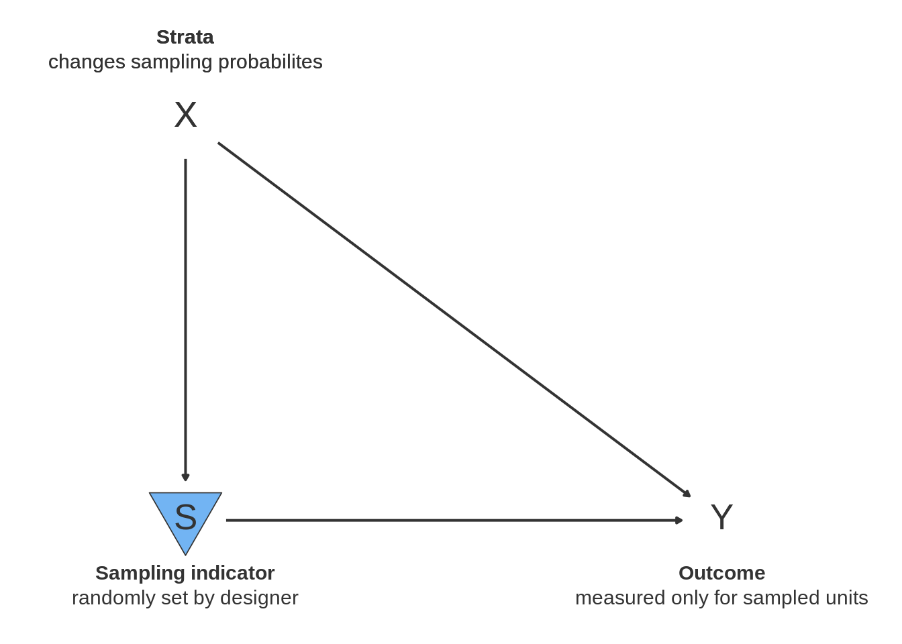

10.1 What belongs in an answer strategy
10.1.1 estimate-estimand pairs
once you have the data, you need to have a procedure to develop an answer or a decision from it. it should be quantitative or qualitative.
you will connect an estimator to an estimand, and the estimator designed to produces estimates of the estimand. distinguish estimate/estimator, using the notation from the paper (am Am etc.).
a function to produce an estimate and measure(s) of uncertainty of the estimate.
may be as simple as a mean or difference-in-means, as in our simple design:
| term | estimate | std.error | statistic | p.value | conf.low | conf.high | df | outcome |
|---|---|---|---|---|---|---|---|---|
| Z | 0.5 | 0.5 | 1 | 0.5 | -5.853102 | 6.853102 | 1 | Y |
- in this case, there is a single statistic (the average difference between outcomes in treated and controlled) that represents the estimate. this is our guess of the estimand, the average treatment effect.
10.1.2 measures of uncertainty
in addition, we have several statistics that assess the uncertainty of the estimate, here the standard error and a frequentist confidence interval. the answer strategy is not just how you get to the answer, but how sure you are of it.
we often also have statistics related to hypothesis testing, here a test statistics and p-value under the null hypothesis of a zero average treatment effect. our “answer” may either be the estimate of the average treatment effect, or in some cases the decision, is there a non-zero average treatment effect.
your answer strategy is the full set of steps from first seeing the data until the estimate of the estimand you present in the paper, which is usually more than just the estimate, its uncertainty measure, and associated hypothesis test.
10.1.3 procedures
procedures, if any, by which you explore the data and determine a final set of estimates are part of the answer strategy. for example, we sometimes find that the model we planned to run to analyze the data cannot be estimated. in these cases, there is an iterative estimation procedure in which a first model is run, changes to the specification are made, and a second or third model is presented as the result. that full set of steps – a decision tree, depending on what is estimable – is the answer strategy and we can evaluate whether it is a good one not only under the realized data but under other possible realizations where the decision tree would be the same but the decisions different.
- procedures where you run two procedures and pick the best fit or preferred on some dimensions
show example of a procedure of this form (model selection?) where the coverage is off if you don’t account for the multi step
report_if_significant <- function(data){
fit_nocov <- lm_robust(Y ~ Z, data)
fit_cov <- lm_robust(Y ~ Z + X, data)
# select fit with lower p.value on Z
if(fit_cov$p.value[2] < fit_nocov$p.value[2]){
fit_selected <- fit_cov
} else {
fit_selected <- fit_nocov
}
fit_selected %>% tidy %>% filter(term == "Z")
}
design <-
declare_population(
N = 100, X = rbinom(N, 1, 0.5), u = rnorm(N)
) +
declare_potential_outcomes(Y ~ 0.25 * Z + 10 * X + u) +
declare_estimand(ATE = mean(Y_Z_1 - Y_Z_0)) +
declare_assignment(prob = 0.5) +
declare_reveal(Y, Z) +
declare_estimator(Y ~ Z, model = lm_robust, label = "nocov", estimand = "ATE") +
declare_estimator(Y ~ Z, model = lm_robust, label = "cov", estimand = "ATE") +
declare_estimator(
handler = label_estimator(report_if_significant),
label = "select-lower-p-value",
estimand = "ATE")
dg <- diagnose_design(design, sims = sims)- procedures for testing assumptions of identification strategy before running analysis, such as falsification or placebo tests. in these tests, you run a test and only analyze the data using the analysis strategy you proposed if it passes the test indicating a failure to reject the null of no violation of the assumptions.
- show example of RDD where the method is biased if you don’t use the assumption test but the procedure is unbiased
conditional_on_placebo_test <- function(data) {
placebo_test <- lm_robust(Y_placebo ~ Z, data) %>% tidy %>% filter(term == "Z")
estimate <- lm_robust(Y ~ Z, data) %>% tidy %>% filter(term == "Z")
if(placebo_test$p.value <= 0.05) {
tibble(estimate = NA, reject = TRUE, term = "Z")
} else {
estimate %>% mutate(reject = FALSE)
}
}
library(sn)
placebo_design <-
declare_population(N = 100, u = rsn(n = N, xi = 0, omega = 1, alpha = 10)) +
declare_potential_outcomes(Y ~ 0.25 * Z + u) +
declare_potential_outcomes(Y_placebo = 0.1 + 1.2 * u) +
declare_estimand(ATE = mean(Y_Z_1 - Y_Z_0)) +
declare_assignment(prob = 0.5) +
declare_estimator(Y ~ Z, model = lm_robust, estimand = "ATE", label = "unconditional") +
declare_estimator(handler = label_estimator(conditional_on_placebo_test),
estimand = "ATE", label = "conditional")
simulations_df <- simulate_design(placebo_design, sims = sims)
# diag <- diagnose_design(placebo_design, sims = sims)
simulations_df %>%
group_by(estimator_label) %>%
summarize(bias = mean(estimate - estimand, na.rm = TRUE))## # A tibble: 2 x 2
## estimator_label bias
## <chr> <dbl>
## 1 conditional -0.0403
## 2 unconditional -0.00311- precommittment is part of the answer strategy
10.1.4 robustness checks
- robustness checks are part of the answer strategy. often, a single estimator is presented as the main analysis but then a series of alternative specifications are displayed in an appendix (such as including or excluding covariates and their interactions, different subsets of the data, or alternative statistical models). the purpose is to provide readers with evidence about how dependent the main results are on the specification, data subset, and statistical model used. when this is the case, the decision a reader makes based on their inferences about the estimand from the estimate depend not only on the main estimate but also the robustness checks. as a result, we want to assess the properties of the two together.
We illustrate with a simple analysis of the correlation between two variables y1 and y2, who have a true positive correlation. y2 is also a function of an observed covariate x and measurement error. Our main analysis is a bivariate regression predicting y2 with y1. We compare this answer strategy to one in which we run that analysis, but also run a robustness check controlling for x. We do this because as the analyst we are unsure of the true DGP and wish to demonstrate to reviewer’s that our results are not dependent on the functional form we choose.
bivariate_correlation_decision <- function(data) {
fit <- lm_robust(y2 ~ y1, data) %>% tidy %>% filter(term == "y1")
tibble(decision = fit$p.value <= 0.05)
}
interacted_correlation_decision <- function(data) {
fit <- lm_robust(y2 ~ y1 + x, data) %>% tidy %>% filter(term == "y1")
tibble(decision = fit$p.value <= 0.05)
}
robustness_check_decision <- function(data) {
main_analysis <- bivariate_correlation_decision(data)
robustness_check <- interacted_correlation_decision(data)
tibble(decision = main_analysis$decision == TRUE & robustness_check$decision == TRUE)
}
robustness_checks_design <-
declare_population(
N = 100,
x = rnorm(N),
y1 = rnorm(N),
y2 = 0.15 * y1 + 0.01 * x + rnorm(N)
) +
declare_estimand(y1_y2_are_related = TRUE) +
declare_estimator(handler = label_estimator(bivariate_correlation_decision), label = "bivariate") +
declare_estimator(handler = label_estimator(robustness_check_decision), label = "robustness-check")
decision_diagnosis <- declare_diagnosands(correct = mean(decision == estimand), keep_defaults = FALSE)
diag <- diagnose_design(robustness_checks_design, sims = sims, diagnosands = decision_diagnosis)We evaluate the two answer strategies in terms of the rate of correctly deciding there is a correlation between y2 and y1. In the main analysis, this means we judge there is a correlation when the p-value is below \(0.05\). In our robustness check answer strategy, we decide there is a correlation when both the main analysis and the robustness check return p-values below \(0.05\) on the coefficient on y1. We see that we are more likely to correctly judge there is a correlation in the simpler analysis strategy. This is because we added an additional criterion to our decision; both criteria, due to random noise, sometimes fail to reject the null of no correlation. Our second answer strategy is more robust in the sense that we have stronger evidence of a correlation when we run the two analyses together. But we are also less likely to decide (correctly) that there is a relationship. The robustness check is conservative. This exercise highlights that the properties of an answer strategy with secondary analyses will be different than the properties of the main analysis alone. If we planned (or conducted) robustness checks, we may wish to know how good the pair of strategies is together.
- distinguish this from changes to the model where we do robustnesss vis a vis a fixed answer and data strategy. i.e. two notions of “robustness”. one is fix I D A and change M, is this “design” robust to changes in M. the other is, within a given run, is the estimate “robust” to changing the estimation procedure, so this is a diagnostic statistic. note I must be defined across these changes in M.
Using the MIDA way of thinking about designs, we can also think of another notion of the “robustness” of a design. The typical way we think of robustness checks is multiple secondary analyses conditional on the observed data to build confidence in an analysis of that fixed data. However, the motivation for these robustness checks is uncertainty about the true data generating process. By declaring a design in terms of MIDA, we can think about the robustness of a single estimator to multiple possible true data generating processes. An estimator that is robust in this sense is one that is unbiased with low uncertainty regardless of, say, the true functional form between y1 and y2. To determine whether an estimator is robust, we can redefine a set of designs with different functional forms and assess the rate of correct decisions of our robustness checks strategy under each different model.
robustness_checks_design <-
robustness_checks_design +
declare_estimator(handler = label_estimator(interacted_correlation_decision), label = "interacted")
robustness_checks_design_dgp2 <- replace_step(
robustness_checks_design,
step = 1,
new_step =
declare_population(
N = 100,
x = rnorm(N),
y1 = rnorm(N),
y2 = 0.15 * y1 + 0.01 * x + 0.05 * y1 * x + rnorm(N)
)
)
robustness_checks_design_dgp3 <- replace_step(
robustness_checks_design,
step = 1,
new_step =
declare_population(
N = 100,
x = rnorm(N),
y1 = 0.15 * x + rnorm(N),
y2 = 0.15 * x + rnorm(N)
)
)
robustness_checks_design_dgp3 <- replace_step(
robustness_checks_design_dgp3,
step = 2,
new_step = declare_estimand(y1_y2_are_related = FALSE)
)
decision_diagnosis <- declare_diagnosands(correct = mean(decision == estimand), keep_defaults = FALSE)
diag <- diagnose_design(
robustness_checks_design, robustness_checks_design_dgp2, robustness_checks_design_dgp3,
sims = sims, diagnosands = decision_diagnosis)10.1.5 presentation of results
how you present the estimates — graphically, in tables, and in text — are all parts of the answer strategy. this is because the inferences readers make about the estimand from your paper do not just come from the numerical estimate. in some cases, the number may not even be presented exactly, and instead a graphic of the estimate and its confidence interval is what readers rely on.
lots of advice to present graphically (cite), what are implications of that? the decisions made from your results by readers are not just a function of numerical estimates but how they are presented.
We explore this by comparing two possible graphical displays of conditional avareage treatment effects in an experiment. A common presentational format is to present the average treatment effect in one group and then the other along with confidence intervals. Inferences are made — either by the author, or by readers — as a function of whether one is significant and not the other. If that is true, the inference is that there is a difference in CATEs. An alternative is to present the estimated difference along with the two effects. The inferences can then directly be based on whether the confidence interval of the difference crosses zero. We illustrate these two visual answer strategies below:

We now demonstrate that the answer strategy on the left is flawed. XXYY describe sims.

10.1.6 multiple comparisons
your answer strategy should take into account how many statistical tests you are conducting, not just focus on the estimate-estimand pair. when you present the results from many null hypothesis tests, the rate of falsely rejecting at least one of those tests even when all are true goes up, due to the multiple comparisons problem. if you plan to adjust for this problem, those adjustments are part of your answer strategy, because they will typically adjust the p-values you report and the decisions readers make with them.
as this seection has highlighted, the answer strategy is intimately connected with the data strategy. people often think of their entire research design as the answer strategy. but they can’t be separated.
10.1.7 what you will do when data goes sideways
to compare answer strategies, you can imagine the estimators that are possible if things go well as well as if things go wrong, when there is missing data or there are outliers in variables. a good answer strategy (which might be a single estimator, or a procedure if-this-then-that) can handle both states of the world.
procedures for addressing deviations from expected analyses are part of the answer strategy. whether a study has a PAP or not, we often have a way we expect to analyze the data if things go well. when they do not – because data are missing, there is noncompliance to an intervention, or the study is suspended for example – the answers will change. these procedures determine the answer the study provides (or in some cases does not), so are part of the answer strategy. standard operating procedures (lin and green) are documents that systematize these procedures in advange.
point is about what you do not the model aspects of this
properties of imputation procedure
standard operating procedures